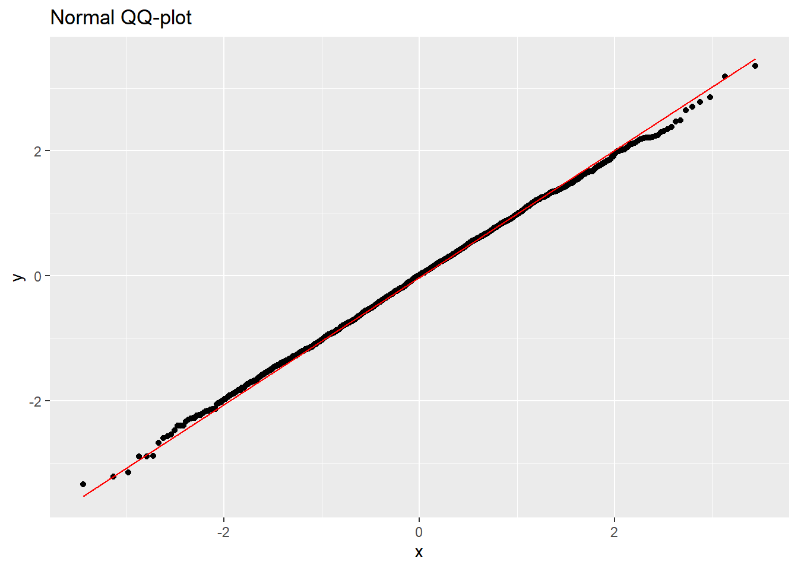
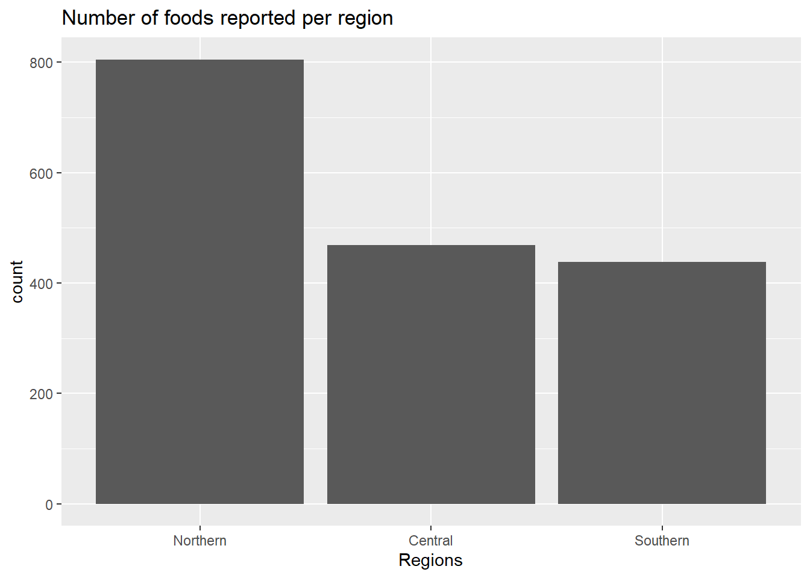
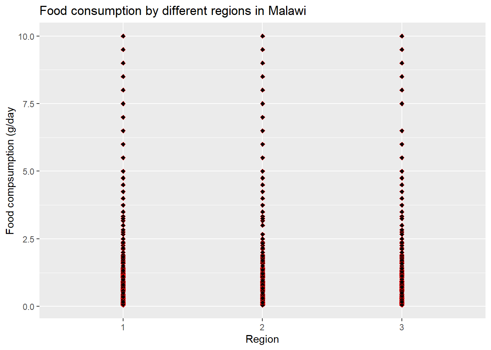
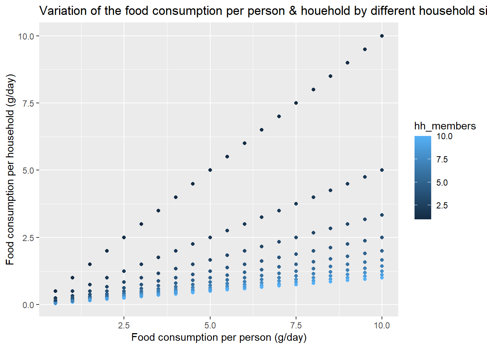
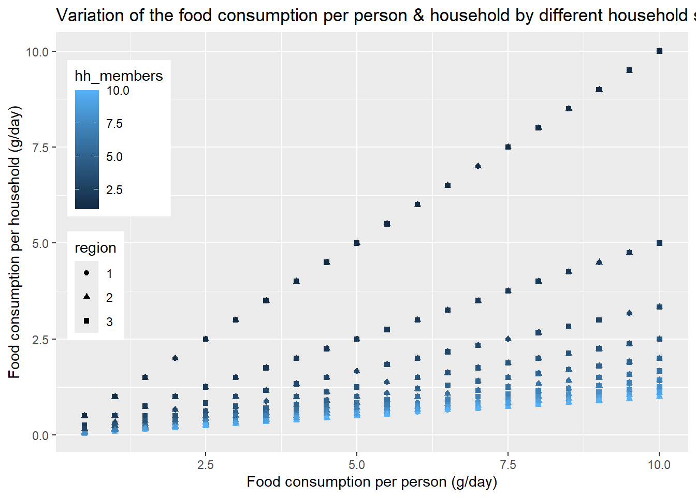

The objective of this section is to provide information on the topic under consideration, along with examples and exercises. You should be able to work through it in R studio. This section requires some packages to be loaded.
# Loading librarieslibrary(ggplot2) # data visualisationlibrary(dplyr) # data manipulation
Attaching package: 'dplyr'
The following objects are masked from 'package:stats':
filter, lag
The following objects are masked from 'package:base':
intersect, setdiff, setequal, union
To demonstrate the visuals, let us load a dataframe called ihs5_consumption which was generated in{Chapter 5}.
# Loading the dataihs5_consumption <-read.csv(here::here("data", "ihs5_consumption.csv")) %>%mutate(region =as.factor(region))
This dataframe contains 36 variables, of which we will be focusing on food_item, consumption_per_person, and region.
The specific objective of the material in this script is to introduce you to different graphic used in R. By the end you should have a better understanding of some basic concepts regarding data visualisation, and should be better-placed to start developing and editing scripts yourself. The particular topics we shall cover are:
Univariate graphs
Multivariate graphs
Controlling layout
Printing graphs
6.2 Univariate graphs
In this section, we look at graphics that we may create with a single variable. This includes histograms, boxplots, bar charts, as well as QQ plots. These are usually important in checking the distribution of variables in your dataset or checking the residuals of a fitted model.
6.2.1 Histogram
# Generating the base for the plotihs5_consumption %>%ggplot()
# Creating the histogramihs5_consumption %>%ggplot() +geom_histogram(aes(consumption_per_person))
`stat_bin()` using `bins = 30`. Pick better value with `binwidth`.
Changing colour of a histogram
Colour names (click to expand)
This is done by adding argument fill ="color". There are various options of colors that can be used. You can check the various options of colors you can use by typing colors().
The color name is placed in quotation marks. Let us make our histogram dark blue.
# Changing colour of the histogramihs5_consumption %>%ggplot() +geom_histogram(aes(consumption_per_person), fill ="darkblue")
`stat_bin()` using `bins = 30`. Pick better value with `binwidth`.
This produces a histogram with blue bars, an x-axis labelled "consumption_per_person" and no title. All these three can be changed to your preference by adding extra arguments to the ggplot() function.
For instance, changing name of x-axis: This is done by adding argument xlab("name of axis"). Note that the name of axis is in quotation marks. Lets assume these data is food consumption data.
ihs5_consumption %>%ggplot() +geom_histogram(aes(consumption_per_person), fill ="darkblue") +xlab("food consumption per person (g/day)")
`stat_bin()` using `bins = 30`. Pick better value with `binwidth`.
Tip
Note that in some published graphs you will find a "solidus" or / inbetween the name of the variable and the units. This is good practice for presenting units in axis labels, favoured by many publishers. The quantities on some axis labels have dimensions which are ratios, like gram per day. This can be done "g/day" but that is not good scientific practice, particularly if you are using the solidus to indicate units as above. It is better to follow the "g" with a power "-1". In R we can do this as follows (of course your data won’t be realistic for this example!)
# Using expession for labelling units in x-axisihs5_consumption %>%ggplot() +geom_histogram(aes(consumption_per_person), fill ="darkblue") +xlab(expression("g day"^-1))
`stat_bin()` using `bins = 30`. Pick better value with `binwidth`.
Changing main title
This is done by adding argument ggtitle("name of main title"). Note that the name of axis is in quotation marks. Lets assume these data is food consumption per person data.
# Adding the titleihs5_consumption %>%ggplot() +geom_histogram(aes(consumption_per_person), fill ="darkblue") +xlab(expression("g day"^-1)) +ggtitle("Histogram of food consumption per person")
`stat_bin()` using `bins = 30`. Pick better value with `binwidth`.
You can also change other features like the contour of the bins or the width.
# Changing bin width of the histogramihs5_consumption %>%ggplot() +geom_histogram(aes(consumption_per_person), binwidth =0.5) +xlab(expression("g day"^-1)) +ggtitle("Histogram of food consumption per person")
# Changing outline colour of the histogramihs5_consumption %>%ggplot() +geom_histogram(aes(consumption_per_person), colour ="green") +xlab(expression("g day"^-1)) +ggtitle("Histogram of food consumption per person")
`stat_bin()` using `bins = 30`. Pick better value with `binwidth`.
Exercise
generate a red histogram. Label the histogram appropriately, assuming that these are data for Food consumption per household in kilograms per week.
6.2.2 QQ plots
The second type of plot we can look at is the QQ plot. This plot is used to check normality of data. The argument used is stat_qq(), and it needs to specify the sample=variable.
# Starting with the empty plot ihs5_consumption %>%ggplot()
The argument for this function is the soil moisture data. The sample quantiles are just the data values, plotted in increasing order. The theoretical quantiles are the corresponding values for an ordered set of the same number of variables with the standard normal distribution (mean zero variance 1). This means that, if the data are normal, the QQ plot should lie on a straight line. The stat_qq_line() command adds this line to the plot to help your interpretation.
You can add a plot title using ggtitle("") as in “histogram and you can change the stat_qq_line() color if you so wish by adding the col="" argument.
# QQ plot + QQ line (in red)ihs5_consumption %>%ggplot() +stat_qq(aes(sample = consumption_per_person)) +stat_qq_line(aes(sample = consumption_per_person), colour ="red") +ggtitle("Food consumption QQ-plot")

Exercise: qq plot
generate a qq plot with a 1:1 line.
Label it appropriately assuming that these are data for Food consumption per household in kilograms per week.
6.2.3 Box plot
Box plots give summary of the minimum, first quartile, median, third quartile inter quartile range, maximum and outlier values in your dataset. They are used for univariate data but can be split based on a factorial variable e.g gender or region. The function that is used to call for a boxplot is geom_boxplot() and the argument is vector data. Let us try plotting using the data we generated earlier.
# Boxplot - changing the orientationihs5_consumption %>%ggplot() +geom_boxplot(aes(consumption_per_person)) +coord_flip()
You can choose to label your boxplot with main title, color and label the axis similar to what we did for histograms. This time however, we label y-axis using ylab() argument.
#Boxplot - changing the orientationihs5_consumption %>%ggplot() +geom_boxplot(aes(consumption_per_person), colour ="dark blue") +coord_flip() +ylab("Food consumption (g/day)") +ggtitle("Boxplot of food consumption per person")
The thick black line in the centre of the boxplot corresponds to the median value of the data (half the values are smaller, half are larger). The bottom of the box (the blue shaded area) is the first quartile of the data, Q1 (25% of the values are smaller), and the top of the box is the third quartile of the data, Q3 (25% of the values are larger).
In exploratory data analysis we call the quantity H = Q3-Q1 the “h-spreadâ€. R calculates what are known as “inner fences†of the data which are at Q1-1.5*H and Q3+1.5*H The “whiskers†above and below the box join the Q1 to the smallest data value inside the inner fences, and Q3 to the largest value inside the inner fences. If there are values outside the inner fences then these appear as points on the plot.
It is possible to produce a graph in which separate boxplots are produced for different levels of a factor. As an example, we would like to understand how food is consumed in the three regions in Malawi. The values are stored in the variable called region.
We then want to plot our data split by the corresponding region we have sampled. We use the function geom_boxplot() but this time we add a new variable.
#Boxplot - by region ihs5_consumption %>%ggplot() +geom_boxplot(aes(consumption_per_person, region))
Now, we can delete the x-axis label using the xlab(), label the y-axis and change the title to reflect the new variable.
# Boxplot - by region ihs5_consumption %>%ggplot() +geom_boxplot(aes(consumption_per_person, region), colour ="dark blue") +coord_flip() +xlab("") +ylab("Food consumption (g/day)") +ggtitle("Boxplot of food consumption per person per region")
Exercise: Box plot
Using the data create:
three boxplots one for each the regions and
exclude the label in the x-axis,
label the boxplots appropriately.
are there any outliers in your data?
6.2.4 Bar plot
This allows us to create a bar chart where the heights of the bars are based on the values given by the vector input. The argument that is used to call for a barplot is geom_bar() and the argument is our region data. There are additional options for giving names to each of the bars, for instance, and for coloring the bars, as you have seen for other earlier plots. This function usually works well when you have tabular data. The simplest form for the function geom_bar() is given below.
# Checking the results of the barplottable(ihs5_consumption$region)
1 2 3
805 469 438
You can check the results by using the function table(), which provide you a count per each variable.
Also, you can choose to add labels to bar plot as earlier mentioned for the previous plots. You can as well change the color of the bars.
ihs5_consumption %>%ggplot() +geom_bar(aes(region)) +xlab("Regions") +ylab("count") +ggtitle("Number of foods reported per region")
You can also change the axis, by using the ylim() function
# Changing limits and colour ihs5_consumption %>%ggplot() +geom_bar(aes(region), fill ="light blue") +ylim(0,810) +xlab("Regions") +ylab("count") +ggtitle("Number of foods reported per region")

Question
What would it happen if you change the y-axis limit from (0, 810) to (0, 800)?
You can also change the colour by each site, that will provide a distinct colour for each site.
# Changing limits and colour by region ihs5_consumption %>%ggplot() +geom_bar(aes(region, fill = region)) +ylim(0,810) +xlab("Regions") +ylab("count") +ggtitle("Number of foods reported per region")
Exercise: Bar plot
Create a bar plot to show the frequency of the food consumed by region in the sample,
label it and adjust the axis and colour appropriately.
6.3 Multivariate graphs
In this section, we look at graphics that we may create with multiple variables. They are important in checking how two or more variables relate to each other.
6.3.1 Plots
The simplest scatter plot is done using the geom_point() function which takes in two arguments. The first argument represents the x-axis while the second argument is the vector of y-axis.
# The data points per site (x, y) ihs5_consumption %>%ggplot() +geom_point(aes(region, consumption_per_person))
From the scatter plot, you will notice that, by default,it added axis labels that are simply the names of the objects we passed i.e consumption_per_person and region and there is no title. All of these things, can be added as previous graphs.
The list below shows arguments that can be added to the plot function as discussed already:
xlab("Region")
ylab("Food compsumption (g/day")
ggtitle("Food consumption by different regions in Malawi")
# The changing the colour of the data points per site (x, y)ihs5_consumption %>%ggplot() +geom_point(aes(region, consumption_per_person), colour ="red") +# Define the colour of the symbolsxlab("Region") +ylab("Food compsumption (g/day") +ggtitle("Food consumption by different regions in Malawi")
6.3.2 Plot Symbols
In the graphics that we have created so far, we have mostly left the plotting symbol as the default, black, unfilled circle. However, We can change the symbol by using the argument shape.
You can change the plotting symbol by assigning a numeric value using = sign. There are two categories of symbols. Those that range from 0 to 20 and from 21 to 25. For the symbols that range from 21 to 25, in addition to being able to set the colour, we can also set the fill. The fill of the shapes is actually set with the argument fill=, but just like with the argument colour=, we can assign any colour value.
# Changing the symbol & colour of the data points per site (x, y)ihs5_consumption %>%ggplot() +geom_point(aes(region, consumption_per_person),shape =17, # Defining the symbolcolour ="red") +# Defining the colourxlab("Region") +ylab("Food compsumption (g/day") +ggtitle("Food consumption by different regions in Malawi")
Let us change the fill color of the symbol by using the fill argument. Remember that only symbol from 21 to 25 allow that that argument.
# Changing the symbol, the outline colour and the fill colour of the data points per site (x, y)ihs5_consumption %>%ggplot() +geom_point(aes(region, consumption_per_person),shape =23, # Define the shapecolour ="red", # Define outline colourfill ="black") +# Define fill colourxlab("Region") +ylab("Food compsumption (g/day") +ggtitle("Food consumption by different regions in Malawi")
We can also set the size of the symbols. We do this with the argument size=. This argument is simply a numeric value indicating how bigger(or smaller) than the usual size we want our points.
ihs5_consumption %>%ggplot() +geom_point(aes(region, consumption_per_person), # Next arguments change the symbol (point)shape =23, # Define the symbolcolour ="red", # Define the outline colourfill ="black", # Define the fill colour size =3) +# Define the sizexlab("Region") +ylab("Food compsumption (g/day") +ggtitle("Food consumption by different regions in Malawi")

Exercise 3.6
Update plots with different symbols, fill colors and symbol size. You can use any symbol and fill color of your choice.
Tip
Note: not all symbol types accept changing fill color.
6.3.3 Plot types
The plot we have created so far are scatter plots. We can however, use alternative plot types. These may include line plot, step plot and lines with points among others.
Exercise 3.7
Create a plot using the variables consumption_quantity, consumption_per_person.
Exercise 3.8
From your plot in Exercise 3.7 , update plots to differentiate the household size (hh_members) using symbol type and color, fill colors and symbol size. You can use any symbol and fill color of your choice.
Tip
Note: not all symbol types accept changing fill color.
From the dataframe ihs5_consumption, we can plot the data by the different household size on the same plot using colour=.
# Scatterplot of food consumption per person & hh by hh sizeihs5_consumption %>%ggplot()+geom_point(aes(consumption_quantity, consumption_per_person, colour=hh_members)) +# Define colour by hh sizexlab("Food consumption per person (g/day)") +# Rename x-axisylab("Food consumption per household (g/day)") +# Rename y-axis# Adding a titleggtitle("Variation of the food consumption per person & houehold by different household size")
You can also change the symbol shape by any variable, for instance, region
# Plotting the food consumption per person & hh by hh size (colour) and region (shape)ihs5_consumption %>%ggplot()+geom_point(aes(consumption_quantity, consumption_per_person, shape=region, # Defining shape by regioncolour=hh_members)) +# Define colour by hh sizexlab("Food consumption per person (g/day)") +# Rename x-axisylab("Food consumption per household (g/day)") +# Rename y-axis# Adding a titleggtitle("Variation of the food consumption per person & household by different household size & region")

6.3.4 Adding Legend to plot
Adding a legend to your plot will make your plot easy to translate. From the plot in the previous section, it is not clear what the different colors or shapes represent. A legend provides information for this.The function to use is theme() combined with legend.position().
The first argument to this function is the position of the legend on your plot. This can be done either by using X and Y co-ordinate location or a single string of the form "bottom", "top", "left", "topleft" among others.
We then need to specify the legend text using legend.text argument. This is a vector of text that will be used to label the legend. The order of the text in the vector should correspond to the order of the points in the plot.
We then specify colors, points, and so on, for data added maintaining the ordering.
Lets create the legend for the plot of soil moisture vs temperature at the sites liempe, chitedze and domboshava. Note that a plot must already be active for legend to be used.
# Plotting the food consumption per person & hh by hh size (colour) and region (shape)# Changing the position of the legendihs5_consumption %>%ggplot()+geom_point(aes(consumption_quantity, consumption_per_person, shape=region, # Defining shape by regioncolour=hh_members)) +# Define colour by hh sizexlab("Food consumption per person (g/day)") +# Rename x-axisylab("Food consumption per household (g/day)") +# Rename y-axis# Adding a titleggtitle("Variation of the food consumption per person & household by different household size & region")+theme(legend.position ="bottom") # Changing the position of the legend
One can alternatively use the x,y position on the plot to position the legend
# Plotting the food consumption per person & hh by hh size (colour) and region (shape)# Specifying the location of the legendihs5_consumption %>%ggplot()+geom_point(aes(consumption_quantity, consumption_per_person, shape=region, # Defining shape by regioncolour=hh_members)) +# Define colour by hh sizexlab("Food consumption per person (g/day)") +# Rename x-axisylab("Food consumption per household (g/day)") +# Rename y-axis# Adding a titleggtitle("Variation of the food consumption per person & household by different household size & region")+# Specifying the position of the legendtheme(legend.position =c(.1, .6))
Exercise 3.9
From your previous plot in exercise 3.8, add a legend to the updated plot that differentiate the region using symbol type and color, fill colors and symbol size.
6.3.5 Controlling graphical layout
When we create plots, we may want to present them on the same page for easy comparison. This can be done in two ways, firstly, using the facetting (e.g., facet_wrap()) or using the plot_grid() function.
Using facet function
There are two facet_ functions within the ggplot. The first one facet_wrap is commonly used when you only need to visualise your data based on one categorical variable. It only needs to specify the variable (vars()) by which one you want to separate your data by. When you have more than one categorical variables that you want to split you daya by, the function facet_grid() would allow more flexibility.
# Plotting the food consumption per person & hh by regionihs5_consumption %>%ggplot()+geom_point(aes(consumption_quantity, consumption_per_person)) +# Adding the variable for splitting the datafacet_wrap(vars(region)) +xlab("Food consumption per person (g/day)") +# Rename x-axisylab("Food consumption per household (g/day)") +# Rename y-axis# Adding a titleggtitle("Variation of the food consumption per person & household by different household size & region")

Using plot_grid() function
This function is not part of the ggplot2 package, therefore it has to be installed and loaded before using it (For more information about packages see Section 4.2.
# Installing the package for the first time# instal.package("cowplot")# Loading the librarylibrary(cowplot)
With thhe plot_grid we can set up a graphics using the nrow argument. The argument is a vector of the number of rows and columns into which our device should be split. When we then create and store the graphics, they will be entered into the device across the rows, starting in the top left of the grid.
As an example, let’s use some of the graphs that we have been creating, and plote them together.
First, we are going to plot and save the scatter plot with the faceted region as an object in our environment called graph1.
Tip
Note: If you place parenthesis () around your code when saving the object the object will be printed.
# Saving the graph1: Food consumption per person & hh by regiongraph1 <- ihs5_consumption %>%ggplot()+geom_point(aes(consumption_quantity, consumption_per_person)) +# Adding the variable for splitting the datafacet_wrap(vars(region)) +xlab("Food consumption per person (g/day)") +# Rename x-axisylab("Food consumption per household (g/day)") +# Rename y-axis# Adding a titleggtitle("Variation of the food consumption per person & household by different household size & region")graph1
Then, let’s do the same for the box plot and the histogram.
# Saving the graph2: Food consumption per person by region (graph2 <- ihs5_consumption %>%ggplot() +geom_boxplot(aes(consumption_per_person, region), colour ="dark blue") +coord_flip() +xlab("") +ylab("Food consumption (g/day)") +ggtitle("Boxplot of food consumption per person per region"))
# Saving the graph3: Food consumption per person histogram(graph3 <- ihs5_consumption %>%ggplot() +geom_histogram(aes(consumption_per_person), fill ="darkblue") +xlab(expression("g day"^-1)) +ggtitle("Histogram of food consumption per person"))
`stat_bin()` using `bins = 30`. Pick better value with `binwidth`.
Once we have our graphs (objects), let’s plot them together into two rows. We can see that it fills the first row, with the graph1 and graph2, and then the second row with the graph3
# Plotting the three graph togethercowplot::plot_grid(graph1, graph2, graph3, nrow =2)
Then, we can add labels to each plot by using the function label=. If we use the "AUTO". It will automatically label them from A-Z in the order as they appeard. We can change it to cou
# Plotting the three graph together with labelplot_grid(graph1, graph2, graph3, nrow =2, labels ="AUTO")
We can customise the labels by changing the label function.
# Plotting the three graph togethercowplot::plot_grid(graph1, graph2, graph3, nrow =2, labels =c("1)", "2)", "3)"))
We can also change the way it is structure, by plotting two graphs as it was one. Let’s save the two first graphs as one combined graph.
`stat_bin()` using `bins = 30`. Pick better value with `binwidth`.
Then, we can plot the again using the top_row object.
# Re-arragning the plotscowplot::plot_grid(top_row, graph1, nrow =2, labels =c("", "C"))
We can see now that there are two plots are now in the first row (there are considered one graph), and the graph at the bottom (graph1) is spread across the second row.
In addition, we can change the space that each graph is occupying. For instance, we would like to decrease the size of the histogram and the boxplot (top_row). Note that as it is one graph you can not change the size of the histogram or the boxplot indepdently here.
x <-rnorm(100)#layout(mat)layout(x)hist(x)#boxplot(x)qqnorm(x)plot(x)
Exercise 3.10
Using the iris data, generate
histogram of Sepal Length,
boxplot of Petal Length,
qq plot of Petal Width and
a plot of Sepal Length against Petal Length on the same plot area with equal dimensions.
Exercise 3.11
Adjust, the plot in the previous exercise so that histogram occupies the whole bottom of the plot area and the other three occupy the top of the plot area in equal dimensions.
6.3.6 Saving/Printing plots
Now that we have known how to create graphics, one thing remaining is to print out the output. A number of graphics devices are available, including PDF, PNG, JPEG, and bitmap. If we do not specify the device to use, the default device will be opened, and in R this is the Plot tab.
To print a graph to pdf ,png and jpeg, one must create the device before plotting the graph. This is done by using the functions
pdf("name.pdf")png("name.pgn")jpeg("name.jpeg")
The argument for these functions is the desired name of the document in quotation marks e.g. pdf("myFirstGraphic.pdf"). When this function is run, the plot tab in R will not appear but a pdf of the graph will be produced in the working directory.
Let us create a histogram of 100 random numbers and save it as a pdf document.
# Create a pdf devicepdf("myFirstGraphic.pdf")# Create a histogram of 100 random numbershist(rnorm(100))# Close the devicedev.off()
Remember to close the device when done using the dev.off() function, otherwise all your graphics onward will be pdf documents and not any other device e.g the R plot tab.
Exercise 3.12
Print the plot you generated in EXERCISE to a PDF, PNG and JPEG giving it an appropriate name. Remember to close the device